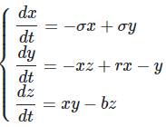
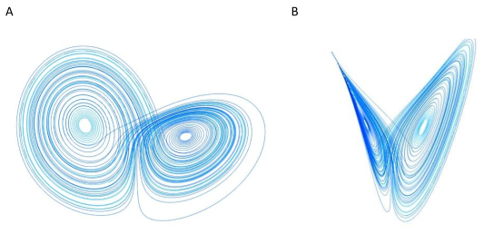
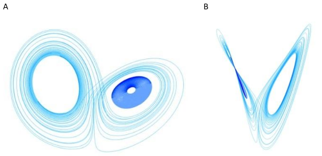
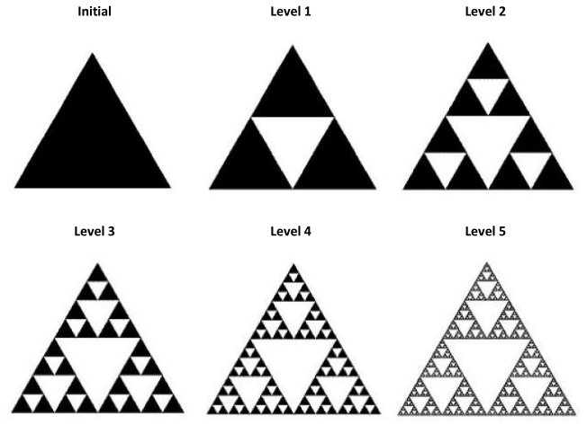
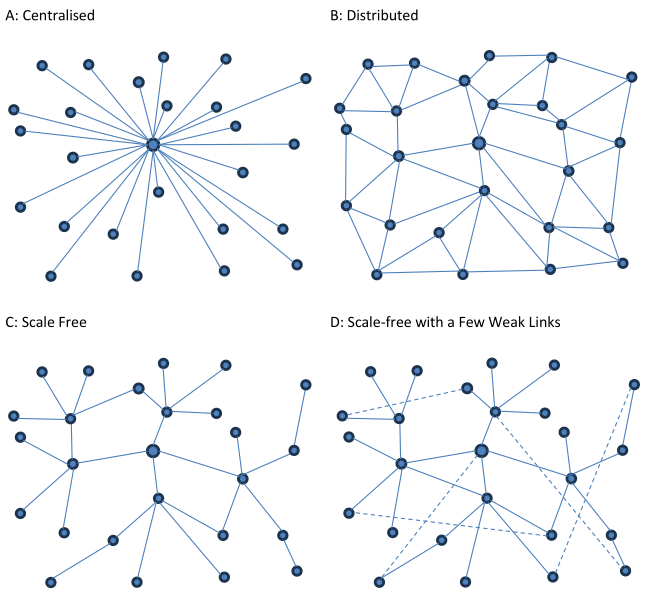
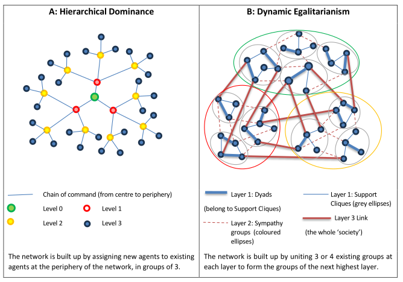

2.3 Complex Adaptive Systems
| ⬅️ | ➡️ |
|---|
Sections:
2.3 Complex Adaptive Systems
- 2.3.1 Wicked problems and complexity
- 2.3.2 The Planetary System of Systems
- 2.3.3 Complex Systems Theory and Thinking
- 2.3.4 Complex behaviour
- 2.3.5 Complex structure
- 2.3.6 Section Summary
2.3.1 Wicked problems and complexity
The challenges ahead of us are global, multi-dimensional and complex (Armstrong et al., 2016). In writing about the difficulty of defining and measuring sustainability in practical terms, Shephard (2020, p. 7) describes the problems involved as wicked. Wicked problems have no simple solutions. Solving one aspect of a wicked problem generally makes another aspect worse. Wicked problems cannot be solved using simple or even complicated mathematical solutions, partly because they involve systems that span multiple domains: environmental, social, and cultural, and systems contain and are contained within other systems. They can only be addressed with ‘clumsy’ solutions, and this involves bringing together disparate perspectives on the problem (Bolstad, 2011, p. 7). Bringing together disparate perspectives is exactly what complexity thinking leads us to do and for this reason, complex systems thinking is a foundational theoretical orientation for this research project in the hope of finding pathways to less clumsy solutions. The central focus of my research is secondary schools and their educational purpose as realised through their enacted curricula. Schools and their curricula can be understood as complex physical, social, and cultural systems, embedded within larger complex systems. Schools are collectives of individuals. They exist within communities, within nations and at the most relevant level for this research, within the Earth’s biosphere.
2.3.2 The Planetary System of Systems
Valuing Sustainable Wellbeing brings us inevitably to acknowledge the interrelated, joined-up nature of all things relevant to the human condition. The COVID-19 pandemic that impacted all human societies globally in 2020-21 and that continues to reverberate in economies around the world, emphatically demonstrates the systemic entanglement of our relationship with Nature, Social Justice, and Cultural perspectives on human nature. The pandemic has called our attention to the planet as a whole (Hipkins, 2021, p. 4), as the System of greatest relevance for human Sustainable Wellbeing.
Clark et al. (2017, cited in Hipkins, 2021) describe Systems Thinking as:
a way of perceiving the world that:
- recognises systems as being comprised of and exhibiting properties that result from dynamic interacting parts
- incorporates a refined understanding of levels of cause and effect, including indirect as well as direct consequences and relationships > between parts, and
- situates the systems thinker within the systems they are studying.
(p. 10)
Recognising and managing the complementary relationship between whole and parts is critical to systems thinking. Understanding the whole planet as the system most relevant to our collective and individual wellbeing achieves, I argue, the right balance of realism and ambition. The planetary upper atmospheric boundary with near space recognises the current limits of human technological and engineering capability, for the vast majority of people. We may eventually send explorers to Mars and beyond but we cannot influence Earth’s astronomical fate. Earth system thinking also corrects for the deeply embedded Western cultural tendency of treating the planet’s myriad subsystems which we do have the capacity to influence and transform—including the biosphere and all our social structures and cultural expressions—as independently functioning, siloed jurisdictions. Shephard (2020) suggests that perhaps sustainability as a destination, or a product, is only truly knowable on a planetary basis (p. 9).
The parallel emergence of dynamical systems theory in the sciences (Hipkins, 2021) and complexity thinking in the social sciences and humanities over the last two centuries provides a theoretical foundation for the concept of a Metacurriculum for Sustainable Wellbeing not only concerning the curriculum itself but also for teachers as agents of transformation and schools as grounded complex dynamic social structures.
2.3.3 Complex Systems Theory and Thinking
The categorisation of systems as simple, complicated, or complex, is a useful entry point to the understanding of complexity theory. One of the earliest writers to differentiate between simple and complex systems was the physicist and information scientist Warren Weaver (Davis & Sumara, 2006). Weaver identified three types of systems—based on the type of scientific inquiry used to investigate them—which he named simple, disorganised complexity, and organised complexity (Haggis, 2008).
Weaver (1948) characterised simple systems as comprised of inert objects that behave in highly predictable ways and are amenable to investigation through classical physics. Billiard ball collisions, ballistic trajectories, and the rotation of rigid objects are examples of simple phenomena. He contrasted simple systems with disorganised complexity—systems that are also well governed by the deterministic laws of physics but involve so many interacting variables they can only be investigated scientifically with statistical mechanics and probabilistic methods. These systems include phenomena such as thermodynamics, magnetism, molecular interactions, and population projections. Organised complexity, describes a class of phenomena lying between these two extremes which also involve a multitude of variables but with the essential difference that these variables are all interrelated and coherently organised. While Weaver’s concept of organised complexity accords with current characterisations of complex systems, his concept of disorganised complexity is somewhat different from a category of systems that came to be described as complicated.
Paul Cilliers describes machines as complicated systems because the function of all their parts can be explained (Cilliers, 1998; cited in Haggis, 2008). Bloom (2016, p. 32) likewise describes human mechanical and social artefacts such as bicycles, engines, computers and assessment and financial systems, as complicated. Simple and complicated systems, for Bloom, can be understood in terms of their separate parts and predictable behaviours, even if they comprise a great number of parts. Complicated systems can be entirely disassembled and reassembled and still function as originally intended (Byrne & Callaghan, 2022, p. 12). Living organisms and ecosystems, by contrast, exemplify complex systems. Their parts cannot all be named nor can their processes all be tracked and explained. Birds and frogs are complex systems. They cannot be deconstructed and successfully reconstructed and their nature cannot be understood outside of the complex system, the forest, of which they are integral components.
Complex systems, as distinct from complicated systems, are in their essential characteristics, irreducible to any formula, because of the non-linear nature of their interactions and the distributed pattern of those interactions (Osberg et al., 2008). Every complex system is unique. Traditional scientific positivism has used machine metaphors to help explain reality. The metaphors work by simplifying and leaving out aspects of reality to achieve formulaic predictability within their limited schema. While complexity theory specifically rejects linear, reductionist, mechanistic positivism as the only basis of knowledge (J. W. Bloom, 2016), it does not reject explanation and causality per se (Cochran-Smith et al., 2014). Of special significance to the application of complexity theory to education is the observation that the rules governing the behaviour of complex systems can change over time, i.e. they self-organise, adapt, and learn. It is the capacity for learning according to Davis and Sumara (2006) that above all characterises complex systems. The term Complex Adaptive System (CAS) which emerged with the establishment of the transdisciplinary Santa Fe Institute in the early 1980s, neatly captures this essential quality of complex systems.
Machines, no matter how complicated, are Closed Systems. In the absence of new inputs, they gradually run down and cease working. Complex systems, by contrast, are 'Open Systems' that continually take in energy, and remain out of equilibrium with their surroundings (Gilbert, 2019, p. 263). While still subject to physical laws, complex systems exhibit behaviours that are essentially unpredictable by any means. Referring to Chaos theory—a precursor and version of complexity theory (Olssen, 2008), Gleick (1987, cited in Alhadeff-Jones, 2008), described complex behaviour as so unpredictable as to be indistinguishable from a random process, even though it may be deterministic in a mathematical sense. This interpretation of complexity brings us to a further critical distinction in the field of complex systems analysis, that between computer-based mathematical models of complex behaviour and living Complex Adaptive Systems.
Byrne and Callaghan (2022) following Morin (2007), use the terms Restricted and General complexity to clarify this vital ontological and epistemological distinction. Restricted complexity refers to reductionist mathematical simulations of complexity such as chaos theory, fractals, strange attractors, and agent-based modelling, behaviour emerging from the rules-based systems of dynamical equations or the interaction of simple agents—ie. micro-emergence (2022, p. 12). By contrast:
The world of General complexity is composed of complex systems which are not just the product of simple interactions but have properties which are not to be understood in those terms and have to be addressed as real in and of themselves.
(Byrne & Callaghan, 2022, p. 12)
In opposition to reduction, [General] complexity requires that one tries to comprehend the relations between the whole and the parts. The knowledge of the parts is not enough, the knowledge of the whole as a whole is not enough, if one ignores its parts; one is thus brought to make a come and go [in a] loop to gather the knowledge of the whole and its parts. Thus, the principle of reduction is substituted by a principle that conceives the relation of whole-part mutual implication.
(Morin, 2007, p. 10)
General complexity, in other words, refers to the reality of existence that inspires all sciences, arts and philosophies; infinite, irreducible, and eternally mysterious. The Framework for a Sustainable Wellbeing Metacurriculum (SWM) that I have developed through co-construction with my participants in this research project has a theoretical fractal structure which is an application of Restricted Complexity. Its use in actual programmes and course design by teachers for and with students, however, must be understood as a living process of General Complexity as are the schools and communities that the metacurriculum is intended to serve.
The capacity for self-organisation could be described as the signature distinction between Complex adaptive systems and those categorised as complicated or just simple. The key aspects of complex systems structure and behaviour I have found most relevant to the social and educational transformation which is the primary focus of this thesis include Self-organisation, Attractors and Phase shifts; Enabling Constraints; Self-similarity and Fractals; and Social Networks. In the following two sections, I discuss the first two topics under the heading Complex Behaviour and the second two under the heading Complex Structure. Although Complex Behaviour and Complex Structure are always, in reality, present together, I use them for distinct analogical purposes in this thesis. I employ the behavioural characteristics of complex systems to illustrate the SWM as an Emergent configuration of the Education System Attractor—or SWM Attractor for brevity—that underlies my main research question.
This optimistic analogy pictures transformation occurring in our secondary school and tertiary education systems in response to Climate Change and the Sustainable Wellbeing Crisis which is analogous to the phase shift of a complex adaptive system attractor adapting to changing external conditions. The education system in this country—and possibly globally—I argue is in the early stages of transitioning from its traditional Business as Unsustainable (BaU) industrialization era configuration toward a Sustainable Wellbeing (SW)-centred Anthropocene configuration. This phase shift could be brought to a crucial tipping point through some critical mass of secondary schools adopting a coherent, co-constructed Sustainable Wellbeing Metacurriculum (SWM) through to year 13.
I employ Complex theoretical Structures, specifically the Lorenz Strange Attractor, the Sierpinski Triangle Fractal, and ideas from complex network theory, to illustrate how a Metacurriculum, centred on Sustainable Wellbeing, that incorporates the complementary strengths of both Cross-Curricular Holistic (CCH) and Subject-Based Specialist (SBS) modes of pedagogy, can be co-constructed—to catalyze a BaU to SWM Phase shift that is already underway—and how it could support and be supported by modifying existing teacher collegial relationship structures in secondary schools.
2.3.4 Complex behaviour
2.3.4.1 Self-organisation and Emergence
The terms self-organisation and emergence are often used in tandem to characterise complex systems.
Self-organization is also known as emergence and, of the many insights of complexity science, it is simultaneously the most important and the most difficult to appreciate. Somehow, agents that need not have much in common much less be oriented by a common goal—can join into collectives that seem to have clear purposes.
(Davis & Sumara, 2006, p. 81).
Olssen (2008) describes an emergent property as a property that is constituted due to the combination of elements in a system. As such it is a property possessed by the system but not by its components (p. 103). Such systems are not in equilibrium because they are constantly changing as a consequence of the interaction between system and environment, and, as well as being influenced by external factors, they are influenced by their history.
2.3.4.2 Strange attractors
The Lorenz Attractor
Self-organisation is also understood in complexity theory as the convergence of a system upon and continuation within a region of its space of possible states and trajectories called a strange attractor. The origins of the phrase strange Attractor go back to a 1971 paper by D. Ruelle and F. Takens on the mathematics of turbulent fluid motion. The authors didn’t explain why the attractor was strange and the term eventually came to mean that system trajectories converging on the attractor are extremely sensitive to the point from which they start, i.e. the initial conditions of the system (Viana, 2000).
The Lorenz Attractor is possibly the most famous example of a restricted complexity model being used as a visual metaphor for complex systems' behaviour and managed systems transformation (Hipkins, 2022). The model appeared in an article published in 1963 by Edward Lorenz, a meteorologist at MIT, who was interested in long-range weather forecasting. His was one of the earliest attempts at weather prediction using computerised evaluation of equations governing the atmosphere's evolution. Lorenz‚Äôs model can be manipulated using just three parameters ùúé (ùë†ùëñùëîùëöùëé), ùëü (ùëü‚Ñéùëú), ùëéùëõùëë ùëè (ùëèùëíùë°ùëé) in the following three differential functions of time (Christersson, 2015):

The sensitivity of the evolution of this system to its Initial condition demonstrated the impossibility of long-range weather forecasting. This sensitivity is also known as the butterfly effect referring both to the difference the flap of a butterfly wing could potentially make to a long-term weather forecast and to the form of the Lorenz Attractor itself, with its two distinctive basins of attraction.
The three-dimensional Lorenz attractor is useful as a metaphor for Educational systemic change processes in that it can model the difference between intrinsic Alternative Stable States of an Attractor—i.e. basins of attraction—and Phase shifts of the system attractor as a whole in adaptation to environmental forcing (Dudgeon et al., 2022). The distinction depends critically on where the system boundary is drawn and the concept of tipping points applies to both. These two types of attractor dynamics are illustrated in Figure 2-1 and Figure 2-2 using two different forms of the Lorenz attractor each seen from two perpendicular points of view.
Figure 2-1 An SWM-like Configuration of the 'Education System Attractor'
The three-dimensional Lorenz Attractor as seen from two perpendicular points of view: (σ,r,b)= (10,28,2.5)

Source: These images, generated at https://www.malinc.se/m/Lorenz.php, are reproduced here under an Attribution-Non-commercial-Share Alike CC license
Figure 2-2 A BaU-like Configuration of the ‘Education System Attractor’
The three-dimensional Lorenz Attractor seen from two perpendicular points of view: (σ, r, b)= (7, 23.5, 2.9)

Source: These images, generated at https://www.malinc.se/m/Lorenz.php, are reproduced here under an Attribution-Non-commercial-Share Alike CC license.
The Alternative Stable States change process is present in both figures as the traces of two moving points along trajectories cycling between one basin of attraction and the other. The Phase shift process‚Äîmodelled by adjusting the Lorenz system parameters ùúé, ùëü, ùëéùëõùëë ùëè‚Äîis represented by the change in the overall form or configuration of the attractor apparent between Figure 2-1 and Figure 2-2.
In this interpretation, the Attractor is both a dynamic system of alternative (relatively) Stable States in the form of basins of attraction and at the same time a component of larger systems which keep its form evolving under the influence of alternative potential Attractor configurations.
The two curving lines, coloured light and dark blue, show the trajectories of two moving points, that may be arbitrarily close initially, but which will inevitably diverge unpredictably while nevertheless remaining within the overall well-defined form of the attractor. The system is fully deterministic in that a particular starting point will always give rise to the same trajectory on machines using the same degree of digital precision. A trajectory will typically complete one to many orbits of one basin spiralling outwards until it reaches a bifurcation point between the basins from where it will transition over in toward the centre of the other basin. A particular trajectory will never intersect with itself and a cross-section through the attractor reveals a fractal pattern of points—of which more is said in Section 2.3.4.3—created by the successive intersections of the trajectory with that cross-sectional plane (Feldman, 2019).
In the social reality of general complexity which is not digitally deterministic, however, the moving points could be individuals with the agency to affect the trajectories they follow to some degree and collectively to influence how the whole Attractor configuration evolves from within.
Bifurcations and Phase-Shifts
Using the language of complexity theory analogically, Gilead and Dishon (2022) describe high-stakes testing regimes like the Programme for International Student Assessment (PISA) as an example of a shaping Attractor for Educational systems worldwide. In terms of the Lorenz attractor analogy, PISA might represent one basin of attraction—the one on the right of Figure 2-1A and Figure 2-2A, say—and New Zealand’s National Certificate of Educational Achievement (NCEA), the other. Schools in New Zealand move under the influence of both but our PISA results influence the form of our NCEA system in ways that NCEA cannot influence the international programme. Figure 2-1 represents a system state where all schools alternate their focus between NCEA and PISA. Figure 2-2 represents a system state where there exist schools that alternate their focus as in Figure 2-1 between NCEA and PISA but also schools, like the point following the dark blue trajectory, that are locked into focusing only on the PISA basin of attraction.
A transition of the attractor from Figure 2-2 to Figure 2-1, however, would represent a fundamental change in both assessment systems called a Phase-Shift. For example, the planned introduction of items within the PISA 2025 Science Assessment for 15-year-old students which will measure essential competencies that underpin the concept of agency in the Anthropocene (White et al., 2023) is a phase shift in terms of the Strange Attractor analogy being driven by an increasing wider cultural acceptance of the Anthropocene concept. Again it should be noted that in applying the Restricted Complexity of the Lorenz Attractor as a metaphor for the General Complexity of actual schools and testing regimes we are not modelling the system agency present in the latter. The distinction between bifurcation alternative Steady State transitions and phase shifts helps us understand and work with schools as complex systems. As Byrne and Callaghan (2022) recommend:
We need to explore sections of the trajectory where things stay much the same—remain in the same attractor—for a relatively long period, and those where the trajectory describes a period of qualitative change, a phase shift, a move to a new attractor in the possibility space.
(2022, p. 145)
In climatic earth system terms, bifurcation is analogous to the periodic alternation of the El Niño and La Niña states of the South Pacific Ocean currents called the El Niño and the Southern Oscillation (ENSO) (National Oceanic and Atmospheric Administration, 2024). ENSO has been described as being governed by a stable rhythmic Attractor with three frequencies in resonance (2.5, 5.0 and 65 years) which Bruun et al. (2017) call the "Heartbeat of the Southern Oscillation" (p. 6746). Phase shift, on the other hand, is analogous to the more dramatic change described in Section 2.2.2 as the biospheric transition between Earth’s snowball (SB) and warm (W) states driven by external solar forcing. In Educational system terms, the ideological changes which routinely take place in education policy at a change of government, from left to right-leaning, can be likened to bifurcation. The change I’m suggesting and exploring through this thesis, from the established BaU curriculum to a Sustainable Wellbeing centred Metacurriculm, is a transformation analogous to phase shift.
Socio-Cultural Attractors
In socio-cultural systems, a sufficiently convincing, well-communicated and timely vision can function as a catalyst for the emergence of an immanent attractor that can act as a more adaptive alternative to the attractor currently organising the system (Gilead & Dishon, 2022, p. 829). From his work with cultures of collaborative learning, Fullan (2016, p. 544) describes strange attractors as forces that cause things to coalesce. For Fullan, the attractors in collaborative learning are human social tendencies that can bring purposeful learning to converge on good solutions. Morrison (2008, p. 25) describes a strange attractor as a specific topic or centre of interest that serves to focus the self-organisation of a social web or ecosystem. Histories of intellectual ideas also can be thought of as self-organising, where the ideas and hunches of a critical mass of autonomous individuals coalesce into a new way of looking at the world, (Kuhn, 2008). Using a vision to nudge systems in a desired direction has been recognized as an effective strategy (Shenhar & Holzman, 2017).
As explained in Section 2.3.3, the analogy of the Sustainable Wellbeing Metacurriculum as an Emergent configuration of the Education System Attractor—or ‘SWM Attractor’ analogy—underlies my research questions. In Section 3.2.3, I describe how the inspiring vision interpretation of the attractor concept is central to my methodology and in Section 3.2.3 how it influenced my research design.
2.3.4.3 Conditions that facilitate transformative change
This research project explores what Davis and Sumara describe as the principal concern of transformative education, i.e. the conditions for the emergence of the as-yet unimagined (Davis & Sumara, 2009, p. 38). They list three conditions of social collectivities, presented as complementary pairs, that facilitate transformative change.
- Specialization—living the tension of diversity and redundancy,
- Trans-Ievel learning—enabling neighbour interactions through decentralized control, and
- Enabling constraints—balancing randomness and coherence.
(Davis & Sumara, 2006, p. 136)
All three are relevant to resolving the central tension for secondary schools concerning an SWM; that is, how to include a core compulsory cross-curricular element centred on Sustainable Wellbeing as an emerging transdisciplinary discipline, and also cater to the traditional Subject specialisation interests and ambitions of students. I use the phrase transdisciplinary discipline here—where something like transdisciplinary learning focus might have been expected—to avoid the impression that the transdisciplinarity intended is to be student-led—a trend labelled as the learnification of education by Biesta (2015, p. 5)—rather than guided by teachers with, or developing, expertise in the disciplined exploration of Sustainable Wellbeing issues and projects.
For Davis and Sumara (2006, p. 140) specialization entails a balancing of individual obsession and collective necessity-that is, a balancing of internal diversity and internal redundancy. Requiring all teachers to be involved in Sustainable Wellbeing education would place a higher value on their holistic pedagogical expertise and broad Sustainable Wellbeing knowledge and skills. This would increase professional redundancy within the teaching staff as a whole but improve the resilience of the whole school curriculum through the teachers' increased sharing of a common conceptual framework and vocabulary. At the same time, maintaining a diverse range of subject specialist teaching knowledge in the collegium improves the potential responsiveness of the whole school curriculum to the rapidly evolving needs of their supporting communities in the Anthropocene.
The neighbour interactions referred to in trans-level learning, include not only personal and group interactions but even more significantly the ideas, questions, and representations that people share. The ideational-creative network rides atop the social network (Davis & Sumara, 2006, p. 140) and they are not the same thing. In complex social entities, not only individuals learn but also the group can develop a shared knowing that transcends the sum of the individuals' knowledge like musicians or teams playing as an ensemble on the same wavelength. Sharing in this sense is a synonym for ‘decentralised’ (p. 145). For neighbour interactions to reach a density sufficient for this sort of learning experience to occur, leadership must become contextually fluid and situationally transferable. Authority becomes consensual within the group and the role of external authorities is to merely condition or occasion possibilities (p. 145) rather than impose them. Within secondary schools, such conditions could include the permanent provision within the students' timetable for cross-curricular holistic Sustainable Wellbeing lessons designed and taught by trans-disciplinary teaching teams.
Finally, the phrase enabling constraints. :
… refers to the structural conditions that help to determine the balance between sources of coherence that allow a collective to maintain a focus of purpose/identity and sources of disruption and randomness that compel the collective to constantly adjust and adapt.
(Davis & Sumara, 2006, p. 147)
Living complex, adaptive systems inhabit the Goldilocks zone between death by rigid ossification and death by chaotic disintegration. As Davis and Sumara (2006) describe:
Complex emergence happens on the edge; where new ideas and innovative genotypes are forever nibbling away at the edges of the status quo, and where even the most entrenched old guard will eventually be overthrown ... [in] the constantly shifting ... zone between stagnation and anarchy ... where a complex system can be spontaneous, adaptive, and alive.
(Waldrop, 1992 as cited by Davis & Sumara, 2006, p. 136)
2.3.5 Complex structure
2.3.5.1 Fractals and Self-similarity
Complex systems display not only self-organization and emergence but also a tendency to contain and be nested within (arising from and giving rise to) other complex systems (Davis & Sumara, 2009). This nestedness and overlapping of levels of organisation are recognised properties of biological systems. From biomolecules in aqueous solution up to the global ecosystem itself the various levels of structure function as a seamless whole simultaneously and complementarily (Theise & Kafatos, 2013). The definition of the system then depends on the scale of observation. The level of observational chosen is inherently, irreducibly coupled to our observations of biological systems (Davis & Sumara, 2010; Theise & Kafatos, 2013). Furthermore, the nested levels of complex biological systems cannot be reduced to one another even when there are deep structural similarities at different levels, as new rules apply at each level (Davis & Sumara, 2006).
Complex social systems have been described as nested structures by various authors (Ettekal & Mahoney, 2017; Napal et al., 2020). Neal and Neal (2013) maintain that networked is a more appropriate descriptor for social structures in our highly connected and mobile twenty-first-century global society. Scale-free networks (Davis & Sumara, 2006; Harré & Prokopenko, 2016; Widlok & Cruz, 2022) offer a theoretical tool that can model both the large-scale nested hierarchical levels and the small-scale dynamic rhizomatic nature of actual human societies. The present section introduces fractal self-similar nested structures and in the following section, I explore social network theory and its implications for teacher-professional relationships in schools wanting to implement transformative approaches to education such as this Sustainable Wellbeing metacurriculum.
The concept of fractal self-similarity is a mathematical representation of a particular form of nested complexity which first gained widespread recognition through the work of Benoit Mandelbrot (1982) and his striking computer-generated fractal geometric images. A fractal is a complex theoretically infinite, recursively constructed shape, such that a magnification of a part of one region of the form can be closely matched with some other region at higher or lower magnification (Alhadeff-Jones, 2008). That is, the parts resemble the whole. The self-similar, nested, qualities of fractal forms can be described as scale-free (Davis & Sumara, 2006). The Sierpinski triangle is an example of a simple scale-free fractal form. Figure 2-3 shows the initial form and first five levels in the recursive process of creating a Sierpinski triangle.
Figure 2-3 The starting triangle and first five levels in the process of creating the Sierpinski triangle

Fractal geometry is only a mathematical analogy to natural forms and to human social and cultural phenomena which demonstrate metamorphosing self-similarity over a finite range of scale levels, even though their structures are embedded in a physical universe with no clear lower or upper bounds to its nested levels of organisation. The fern leaf shown in Figure 2-4 is a typical example of a self-similar structure in plants.
Figure 2-4 The whole fern leaf with its fractal substructure and the unfurling fronds [inset]
2.3.5.2 Social Networks
Network theory is a branch of complexity research which offers valuable principles for describing complex structures and dynamics, relevant to human social (and logistical) networks and I argue, for transforming the structure of teachers' professional relationships in ways that will foster both their cross-curricular pedagogical expertise in Sustainable Wellbeing and also their traditional subject-based specialities. As I explore further in Section 2.5, teachers’ professional relationships in most secondary schools remain dominated by hierarchical subject-based authoritarian structures. The alternative form of professional social networking, Dynamic Egalitarian structures, also naturally arise, especially in smaller schools, but they are generally not formally and systematically applied to the curriculum and lesson timetable and their potential to foster innovative cross-curricular education for Climate Change, Sustainability and Wellbeing is thus untapped.
Davis and Sumara (2006), describe three basic forms of network architectures: centralized, scale-free (decentralized, fractal-like) and distributed, as illustrated in Figure 2-5.
Figure 2-5 Four types of network architectures. Source: Davis and Sumara (2006)

Centralized systems have highly efficient information flow because their nodes (or agents) can, in principle, be separated by just one other linking node. The network is, however, at risk of system-wide collapse if the central node fails. A distributed, mesh-like system by contrast can be extremely resilient, although much less efficient at moving information and resources. The decentralized or scale-free network, typical of complex systems, balances efficient communications with resilience. Although sections of the network can become isolated if key nodes fail, this vulnerability can be minimised by building in a few additional distributed weak links. Improving the flow of information in the network can boost the adaptive intelligence of the system (p. 52). Attention to the dynamics of professional networks in organisations such as schools could thus be critical to understanding their relative willingness or resistance to transformative change.
Complex scale-free network-like phenomena are also often seen to be interpenetrating. Distinct but intimately entangled networks can and do exist in the same spaces. For example, the object-subject relationship between one's neural system and one's conceptual framework can both be understood in terms of decentralized networks, but neither can be reduced to the other (Davis & Sumara, 2006). The natural world is full of intertwined fractal structures such as the lung with its bronchi, various bronchioles, and alveoli (Stanley & Young, 2011), with the fractally elaborated network of blood vessels in a way that maximises the area of intimate association between the two networks for the efficient exchange of O2 and CO2.
In their study of small-scale human societies, M. S. Harré and Prokopenko (2016) identify two distinct forms of scale-free networks which they call Hierarchical Dominance and Dynamic Egalitarianism, as illustrated in Figure 2-6. Hierarchical Dominance is most like Davis and Sumara’s (2006) Scale-Free network, Figure 2-5 C. Dynamic Egalitarianism looks a little like Figure 2-5 D, the Scale-free with a Few Weak Links network but is in fact a different form of a scale-free network. Hierarchical Dominance and Dynamic Egalitarianism networks are scale-free In ways that are numerically equivalent but structurally distinct.
Figure 2-6 A and Figure 2-6 B both comprise 40 agents (nodes). Both are growing at a constant scale factor of 3 and are geometrically related to the Sierpinski fractal of Figure 2-3. The Hierarchical Dominance network grows from the top (or centre) outwards whereas the Dynamic Egalitarianism network grows from the bottom up. At each new level, the Hierarchical Dominance network assigns three times the number of agents in the previous level to each of the agents in the prior level as shown in Figure 2-6 A. In the Dynamic Egalitarianism network, contrastingly, growth occurs when existing groups come together in groups of three or four, on average, to form a new group at the next highest layer of relationship (Figure 2-6 B).
According to Harré and Prokopenko (2016 Abstract), the ‘social brain hypothesis’ argues that the size of social groups is determined by human beings’ neurologically constrained capacity for maintaining long-term stable relationships. The number of links that must be sustained by any agent within the Hierarchical network is never more than four and there are only two forms of relationship, superior and subordinate. The network can therefore, in principle, grow indefinitely providing the social licence of the authority structure holds. The number of relationship links that must be sustained by agents in the Dynamic network, however, increases on average by 1 per layer so there is an upper limit to how large it can grow. The dynamic relationships form spontaneously but to sustain social cohesion more than half of the agents in each layer must be linked with the relationship(s) characteristic of the layer. Harré and Prokopenko conclude that:
Humans were probably egalitarian in hunter–gatherer-like societies, maintaining an average maximum of four or five social links connecting all members in a largest social network of around 132 people.
Figure 2-6 Two contrasting forms of scale-free social network (figure adapted from M. S. Harré and Prokopenko (2016))

Why this constraint on maximum group size should be related to only cognitive relationship limitations and not also to our affective and physical relationship limitations is not explained by Harré and Prokopenko (2016) in this article. Their Dynamic Egalitarianism network explanation does however fit convincingly with previous ethnographic studies of actual small hunter-gatherer bands and societies that the authors cite. Dynamic Egalitarian groups interestingly also possess the features of dense neighbour interactions and shared, decentralised authority suggested by Davis and Sumara (2006) as the precondition for trans-level learning, noted above in Section 2.3.4.3.
The Hierarchical and Egalitarian networks have different strengths and weaknesses in terms of social wellbeing. The former makes it possible to effectively coordinate the activities of large diverse groups that can consequently undertake much larger coordinated projects. At the same time, if the hierarchy becomes entrenched the higher-ranked individuals can end up commandeering resources and cultural narratives to the overall detriment of the society. The latter fosters the agency and creativity of individuals. Small groups have richly pluripresent relationships that illuminate their diversity and uniqueness, whereas large-scale societies are dispersed, very unlikely to ever encounter every other member and only belong to the group on the strength of some shared abstract reality like nationality (Widlok & Cruz, 2022). Small groups however also have disadvantages such as a limited range of survival skills, points of view, and ultimately genetic material for out-breeding. As Widlok and Cruz (2022) point out, it would be wrong to assume that human beings who lived in hunter-gatherer societies for hundreds of thousands of years before the agrarian revolution, lived only in small-scale Egalitarian bands. There is a wealth of evidence that hunter-gatherers alternated between small Egalitarian bands and large hierarchical political organisations, according to their social purposes and in response to environmental circumstances such as seasonal rhythms. Widlok and Cruz (2022) also note how the globalisation of human societies and economic entities in the modern era has generated further levels of complexity and different patterns of activity in human social networks such as corporate entities relocating their manufacturing to nations with low labour costs while scaling up their research, development and management in another where taxation is low. Here we come full circle to recognising the essential inseparability of complex structures and complex behaviours.
Social network theory shows how the structuring of teachers’ professional relationships could be improved to facilitate education for Sustainable Wellbeing. Dynamic Egalitarian networks may have a role in developing a scale-free structured approach to Cross-Curricular Holistic (CCH) teaching teams complementary to the existing role of Hierarchical Dominance networks in coordinating Subject-Based Specialist (SBS) departments and school administration. Schools with high school-aged students in New Zealand vary widely in size. In 2022, four schools had over 2,500 students but 265 (half) had 421 or fewer. As I report in Section 6.2.3, these disparities of scale are correlated with how likely schools are to support education for Sustainable Wellbeing. Social network theory might have a role also in resolving the difficulties associated with this lack of engagement with education for Sustainable Wellbeing in larger schools.
2.3.6 Section Summary
Seeing secondary schools as complex adaptive systems within the complex systems of their communities, nations and ultimately the planet has profound implications for the way we manage education and organise the curriculum at this moment of human evolution. Real systems exhibit general complexity, that is they are theoretically irreducible, rule-conditioned and yet ultimately mysterious. The effectively unpredictable but essentially deterministic behaviour of complexity generated by computer-based algorithms and their mathematical visualisations are examples of restricted complexity which although ontologically distinct from generally complex phenomena are through their simulations providing us with deep insights into how we may more sustainably participate in our social networks as transformative agents within our generally complex, natural environment, social, planetary and educational systems.
Recalling the Lorenz attractor image of Figure 2-1, I am reminded of the animated versions of this graphic and the rhythmic way in which any trajectory of the system evolves in time moving periodically but unpredictably like a heartbeat through the bifurcation transitions between the two basins of attraction. This is a perfect metaphor for how complementary alternative states such as the Egalitarian and Hierarchical networks or CCH and SBS modes of teaching could coexist to support a resilient, coherent, and environmentally responsive social system.
The potential for a vision like Sustainable Wellbeing to act as an effective attractor phase shifter for our education system depends on the meanings and values people associate with this phrase and the way the vision is articulated. In the following section, I explore the ideas of some leading writers in the fields of Sustainability, Wellbeing, and Education for Sustainability, in search of insights into what associations might most effectively invoke an SWM attractor phase shift for the Anthropocene.
| ⬅️ | ➡️ | ⬆️ |
|---|